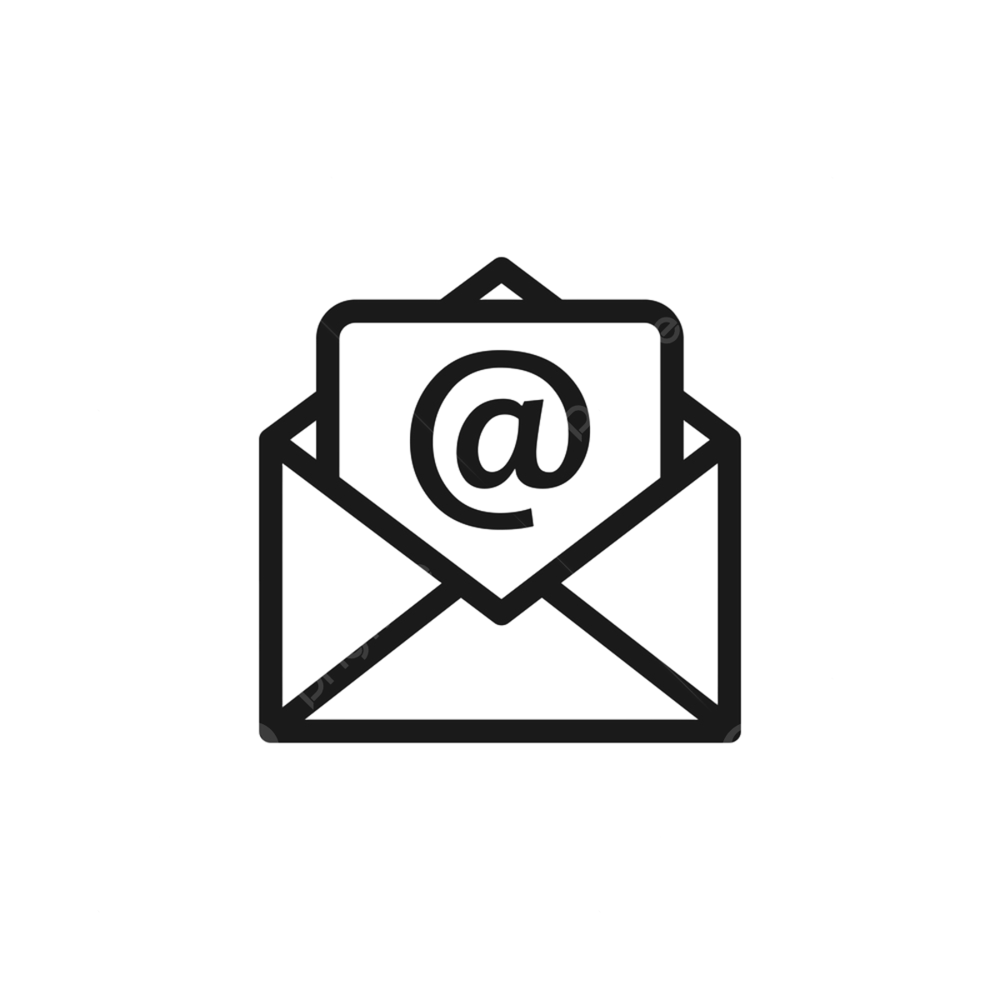

Skills
Personal experience
- Urgent Care Physician
with a focus on quality and efficiency.
improving patient satisfaction and throughput.
reducing readmission rates by 5% through better post-care communication.
- Associate Physician
of acute conditions.
ensuring compliance with healthcare standards and achieving a 98% compliance rate.
enhancing team collaboration and patient care efficiency.
Education
Master of Science in Healthcare Management
2013-2016
Doctor of Medicine (MD)
2009-2013
21/10/2008
Esc. 188 Barranco Jerónimo
12 Puerta 132, Benidorm, Rio 40986

+82 6 623 4652
